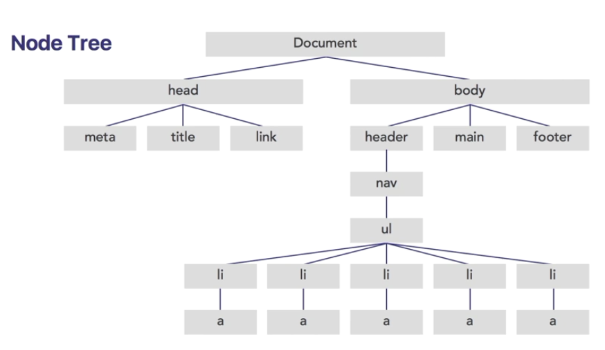
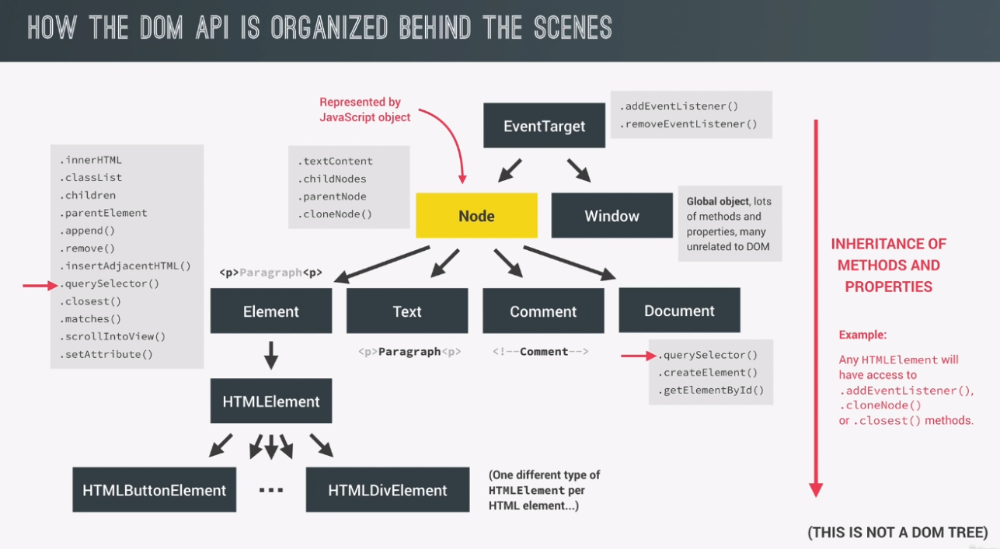

All web pages are organized by the BOM and DOM.
BOM is the 'Browser Object Model'. The 'window' is the top level object within the BOM.
View the following link for properties and methods to use with the 'window' object.
The DOM is inside the BOM.
The DOM is a model for HTML that forms the web page.

The document is one giant object. And all the elements within the document are nodes inside that object.
View the following link for properties and methods of the Document.
For example, if you wanted to access the title node, you'd use: document.title.
This is just an abstract representation of the DOM.
